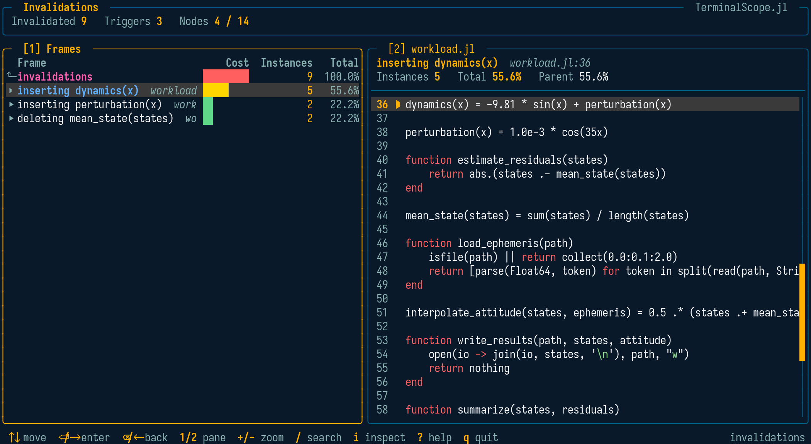

Invalidations
The invalidations mode of @scope records the method invalidations caused by an expression — typically code loading — and opens the viewer with the invalidation forest:
@scope invalidations exprThe typical usage wraps a package load:
julia> @scope invalidations using SomePackageThe recording is performed by SnoopCompileCore.@snoop_invalidations, and the raw data is organized into trees by SnoopCompile.invalidation_trees.
SnoopCompile itself invalidates compiled code when loaded, so TerminalScope loads it on the first use of this feature — deliberately after the recording, so its own invalidations do not pollute the capture. If it cannot be loaded, the raw data is returned so nothing is lost.
The Viewer

The first level lists the triggers — one row per event that invalidated compiled code — sorted by the number of invalidated method instances:
inserting f(::T): A new, more specific method was defined;deleting f(::T): A method was removed;rebinding Main.x: A binding (e.g. a constant) was redefined;unattributed invalidations: Invalidations thatSnoopCompilecould not attribute to a recorded definition, common when package images are involved.
Descending into a trigger shows the invalidated method specializations and, recursively, the callers invalidated through them. Method-table backedges are listed under an intermediate row named after the invalidated call signature. The cost column shows the number of invalidated instances in each subtree.
Pressing i on an invalidated instance opens the Type Inspector on it, so the loose type that made the code vulnerable to invalidation can be found immediately.
Viewing Collected Data
scope_invalidations(invs)accepts either the raw data returned by SnoopCompileCore.@snoop_invalidations or the trees returned by SnoopCompile.invalidation_trees.
Examples
julia> using TerminalScope
julia> @scope invalidations using CSV
julia> invs = SnoopCompileCore.@snoop_invalidations using DataFrames;
julia> scope_invalidations(invs)